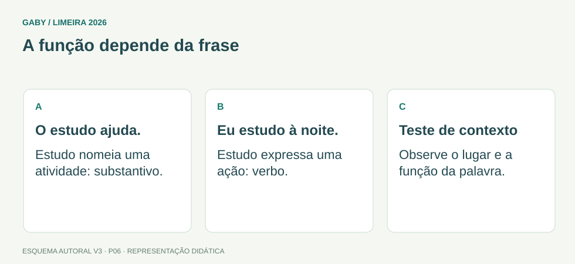

Objetivos do módulo
- Identificar a classe de uma palavra pelo uso no contexto.
- Entender a função semântica de artigos, pronomes, advérbios, preposições e conjunções.
- Perceber mudança de classe por substantivação e uso contextual.
A função depende da frase

Descrição em texto do esquema
- O estudo ajuda.: Estudo nomeia uma atividade: substantivo.
- Eu estudo à noite.: Estudo expressa uma ação: verbo.
- Teste de contexto: Observe o lugar e a função da palavra.
Oficina visual · aplique o esquema
Classifique “rápido” em “o atendimento rápido ajudou” e “o atendente respondeu rápido”.
Atividade autoral complementar da V3. Registre sua resposta; a resolução está no arquivo de gabarito e revisão.
Mapa do conteúdo
1. Classe depende do funcionamento
A classificação não deve ser feita apenas pela aparência da palavra. “Jantar” é verbo em “vamos jantar” e substantivo em “o jantar está pronto”. O artigo é um forte sinal de substantivação.
Em prova, a banca costuma destacar uma palavra e perguntar sua classe no trecho. Leia o entorno e observe o que ela modifica ou substitui.
2. Classes nominais
| Classe | Função típica | Exemplo |
|---|---|---|
| Substantivo | nomeia seres, ideias, ações | arquivo, gestão, coragem |
| Artigo | determina o substantivo | o, a, um, uma |
| Adjetivo | caracteriza substantivo | documento oficial |
| Numeral | quantifica/ordena | dois, segundo |
| Pronome | acompanha ou substitui nome | ele, este, meu, alguém |
3. Verbo e advérbio
Verbo expressa ação, estado, fenômeno ou processo e varia em tempo, modo, pessoa e número. Advérbio modifica verbo, adjetivo, outro advérbio ou toda a oração, indicando circunstâncias como tempo, modo, lugar e intensidade.
Em “chegou muito cedo”, “cedo” modifica “chegou” e “muito” intensifica “cedo”.
4. Preposição e conjunção
Preposição liga termos e estabelece relações: de, em, a, para, com, por etc. Conjunção liga orações ou termos de função semelhante e explicita relações lógicas: adição, oposição, causa, condição, conclusão.
5. Interjeição e palavras denotativas
Interjeições expressam estados afetivos ou apelos: “ah!”, “ufa!”, “atenção!”. Em questões, o mais importante é reconhecer que não desempenham a mesma função sintática das classes nominais e verbais.
Exemplos resolvidos passo a passo
Exemplo 1
Situação: Classifique “jantar” em “O jantar terminou cedo” e “Vamos jantar cedo”.
Exemplo 2
Situação: Em “A equipe extremamente eficiente respondeu rapidamente”, classifique “extremamente” e “rapidamente”.
Pegadinhas e erros frequentes
- Classificar palavra isolada sem contexto.
- Confundir pronome com artigo.
- Confundir adjetivo com advérbio: adjetivo modifica substantivo; advérbio não varia e modifica verbo/adjetivo/advérbio.
Resumo de prova
- Classe é determinada pelo uso.
- Artigo pode substantivar outras classes.
- Adjetivo caracteriza substantivo; advérbio modifica verbo/adjetivo/advérbio.
- Preposição liga termos; conjunção liga orações e explicita relações.
Exercícios do módulo
Resolva sem consultar o arquivo de gabarito. As questões são autorais e construídas para treinar os conceitos do edital.
- verbo
- pronome
- advérbio
- adjetivo
Fonte: referência de estudo.
- artigo
- substantivo
- advérbio
- adjetivo
Fonte: referência de estudo.
- verbo apenas
- substantivo
- preposição
- conjunção
Fonte: referência de estudo.
- mesa
- rápido
- com
- este
Fonte: referência de estudo.
- advérbio
- interjeição
- artigo
- numeral
Fonte: referência de estudo.
- conjunção
- preposição + artigo
- verbo + pronome
- advérbio
Fonte: referência de estudo.
- preposição
- conjunção adversativa
- artigo
- numeral
Fonte: referência de estudo.
- substantivo
- verbo
- pronome
- interjeição
Fonte: referência de estudo.
- artigo
- preposição
- advérbio de intensidade
- adjetivo
Fonte: referência de estudo.
- preposição
- substantivo
- verbo
- adjetivo
Fonte: referência de estudo.
Quando terminar, abra Português 06 - Classes de Palavras - Gabarito e Revisão.
Checklist de domínio
- ☐ Identificar a classe de uma palavra pelo uso no contexto.
- ☐ Entender a função semântica de artigos, pronomes, advérbios, preposições e conjunções.
- ☐ Perceber mudança de classe por substantivação e uso contextual.
Meta do módulo: 80% ou mais nas questões, sem depender de consulta.
Referências e conteúdos auxiliares
- Presidência da República — Manual de Redação, 3ª ediçãoClareza, redação oficial, concordância, regência e pontuação. Referência de apoio; modelos locais podem ter regras próprias.
- Academia Brasileira de Letras — VOLPConsulta de grafia e classe gramatical. O vocabulário não é um dicionário de significados.
Referências externas de apoio consultadas para a V3 em 27/09/2026. A origem das questões é o material autoral do projeto; estes links não indicam que uma instituição publicou ou validou os exercícios. As páginas externas precisam de internet. Em informática, confira a versão do programa; em legislação, observe o recorte e as regras de atualização do edital.